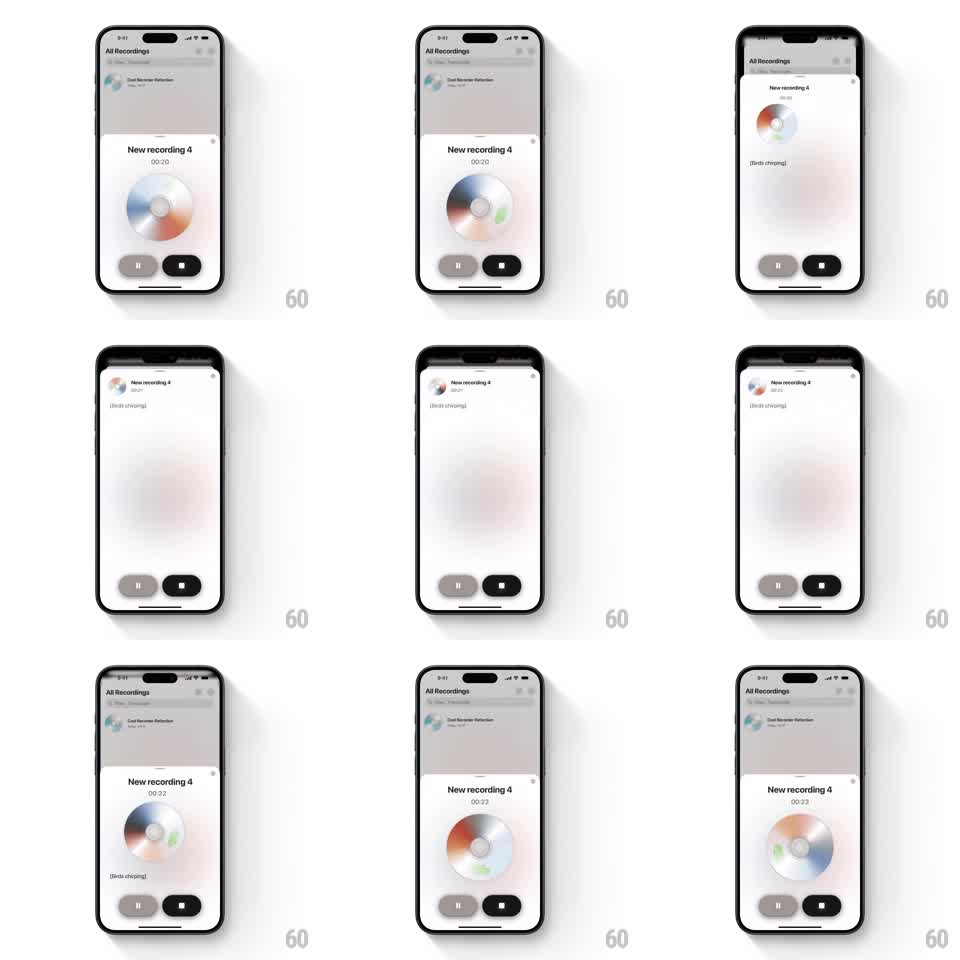

Media
Frame-by-frame

Rebuild this animation 1:1: Scribe's recording sheet - a skeuomorphic spinning CD shrinks and docks into the sheet's header as the sheet expands from compact to full height, and grows back as it collapses.

Rebuild this animation 1:1: Scribe's recording sheet - a skeuomorphic spinning CD shrinks and docks into the sheet's header as the sheet expands from compact to full height, and grows back as it collapses.
## Integration
Integration: stack-agnostic spec - springs given as stiffness/damping, timed motions as duration + curve; map every value to your framework and animation library of choice.
## Scene
A light recording sheet over the All Recordings list. In its compact state, a large CD graphic (rainbow-sheened disk with a hub) sits center under "New recording 4" and a timer (00:20), with pause and stop pills below. Dragged up, the sheet expands: the disk shrinks into the header row next to the title, the timer and a transcript line ("[Birds chirping]") stack under it, and the controls stay pinned at the bottom.
## Motion spec
Pattern: sheet drag with disk dock morph, gesture-driven.
- The sheet tracks the vertical drag 1:1 between its compact and expanded detents.
- The disk shrinks continuously with sheet progress (scale 1 to 0.35) and travels from center stage to the header slot, rotating as it moves - the whole motion interpolates, no cut.
- The disk spins slowly throughout (roughly one revolution per 3s), its sheen sweeping.
- On release, the sheet snaps to the nearest detent (spring stiffness 320 damping 26), the disk completing its travel with the same spring.
- Transcript text fades in only past 70% expansion; the compact state shows no transcript.
## Calibration
- The disk is the hero: its morph must stay on one object the whole way - scale and translate together.
- Sheet corners round more in compact mode, flattening slightly as it expands.
## Reduced motion
Sheet snaps between states; disk crossfades between sizes.
## Don't miss
- The CD's rainbow sheen rotates with the disk - the highlight moves.
- Pause and stop pills never move; they are the sheet's fixed floor.